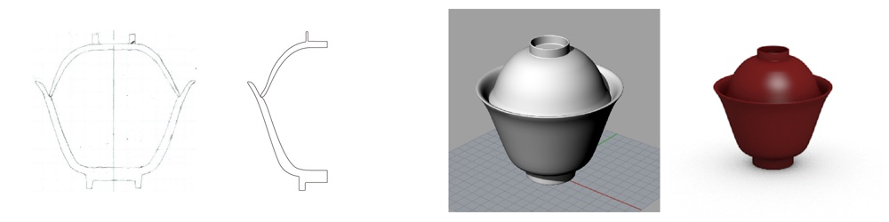
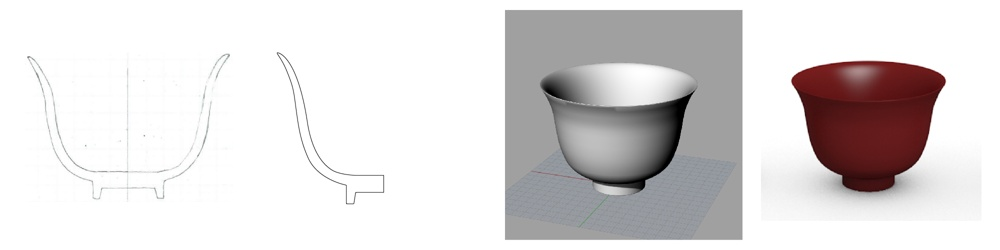
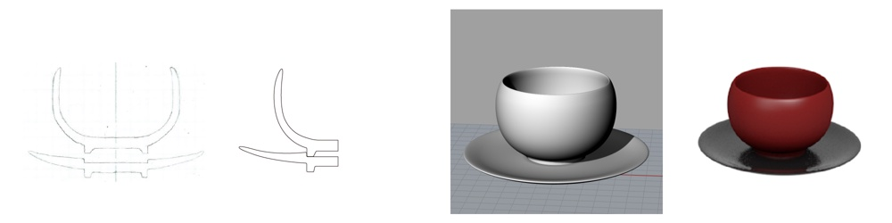
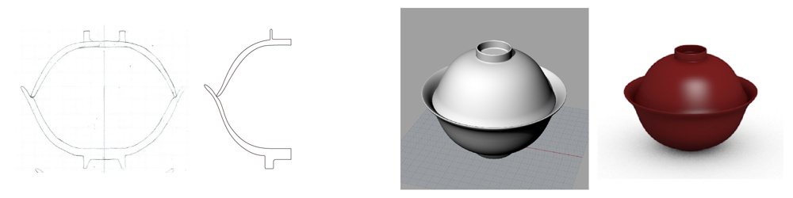

皿・ボウル・コップのデザイン
ターゲットは富裕層の5.60代の夫婦と，その家族。日常的に使用できるものではなく，記念日などの何か特別な日に，食卓を彩る食器をデザインしました。安価ではないけれど高すぎない，”手の届きやすい高級”をイメージしています。
Scrapbox↗︎




ターゲットは富裕層の5.60代の夫婦と，その家族。日常的に使用できるものではなく，記念日などの何か特別な日に，食卓を彩る食器をデザインしました。安価ではないけれど高すぎない，”手の届きやすい高級”をイメージしています。